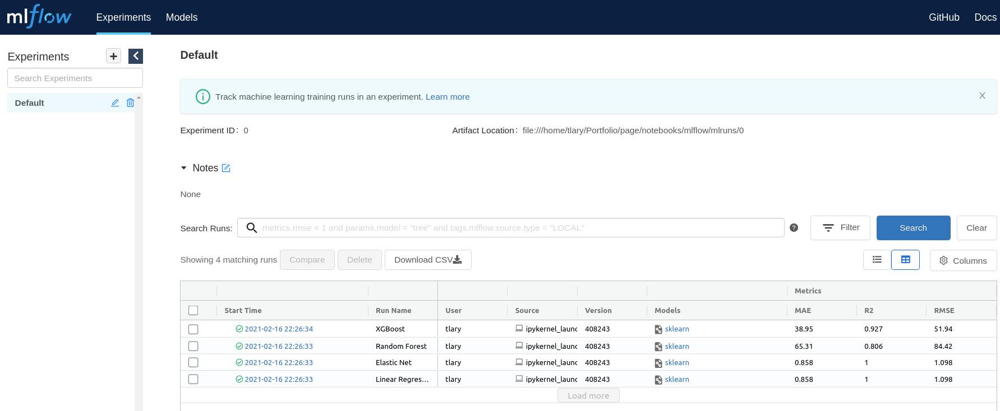
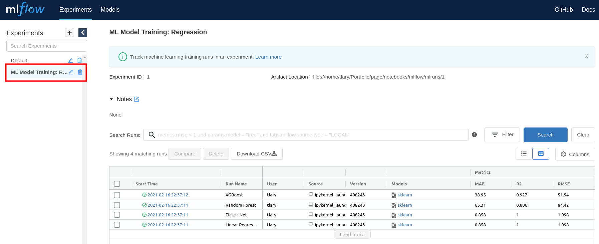

Tracking ML Experiments and Model Performance using MLflow
Tue, Feb 16, 2021
5-minute read
During Data Science projects, one of the main objectives is to eventually deliver a well-performing predictive model. To achieve this, Data Scientists usually test a large number of different algorithms with different hyperparameters, change the way the data is preprocessed (e.g. normalized, scaled, transformed to get the distribution more towards a normal distribution, etc.), or different combinations of features as input variables.
In order not to lose track of the models, and especially their performance, it is advisable to track them in some way. A common option is to manually record the models and performance metrics, e.g. in an Excel sheet. However, this is not only cumbersome but also error-prone, especially when working on the same task with multiple people in a team. In this blogpost I will present another, easier way to keep track of ML models and model training: using the MLflow framework it is possible to incorporate logging the models and their performance with only very little lines of additional code.
Besides tracking ML experiments, MLflow can actually be used to do a lot of other things as well. To cite their website:
MLflow is an open source platform to manage the ML lifecycle, including experimentation, reproducibility, deployment, and a central model registry. MLflow currently offers four components:
- MLflow Tracking: Record and query experiments: code, data, config, and results
- MLflow Projects: Package data science code in a format to reproduce runs on any platform
- MLflow Models: Deploy machine learning models in diverse serving environments
- MLflow Model Registry: Store, annotate, discover, and manage models in a central repository
In this post however, I will use the tracking component only.
1. Load Data and create Models to log
To demonstrate MLflow’s logging capabilities, we first need models that can be logged. In this example, we will use a generated dataset from scikit-learn’s datasets module. make_regression() creates random input data and a corresponding numeric output, which is generated from a linear combination of the input variables. As usual, we divide the dataset into a training and a testing dataset.
import pandas as pd
import numpy as np
import mlflow
from sklearn import datasets
from sklearn.model_selection import train_test_split, RandomizedSearchCV
X, y = datasets.make_regression(n_samples=1000, n_features=20, noise=1)
X = pd.DataFrame(X)
y = pd.Series(y)
X_train, X_test, y_train, y_test = train_test_split(X, y, test_size=0.2, random_state=123)
For demonstration purposes, we will use four different algorithms and log their performance as well as save the fitted models. We are going to use simple linear regression, elastic net, random forest, and XGBoost. The algorithms’ hyperparameters are tuned using Random Search over a prespecified hyperparameter space evaluating 10 combinations of hyperparameters for elastic net, and 30 for random forest and XGBoost. Since the focus is not on the modeling part, I will skip any preprocessing steps here.
from sklearn.linear_model import LinearRegression, ElasticNet
from xgboost.sklearn import XGBRegressor
from sklearn.ensemble import RandomForestRegressor
### INITIALIZE MODELS
linReg = LinearRegression()
enet = ElasticNet()
rf = RandomForestRegressor()
xgb = XGBRegressor()
### DEFINE HYPERPARAMETER SPACES
# Parameter Grid: Elastic Net
hp_enet = {"alpha": [1e-5, 1e-4, 1e-3, 1e-2, 1e-1, 1.0, 10.0, 100.0],
"l1_ratio": np.arange(0, 1, 0.01)}
# Parameter Grid: Random Forest
hp_rf = {"n_estimators": np.arange(100, 1001, 200),
"max_features": ["auto", "sqrt", "log2"],
"max_depth": np.arange(5, 51, 10),
"min_samples_split": [2, 5, 10],
"min_samples_leaf": [1, 2, 4, 8],
"bootstrap": [True, False]}
# Parameter Grid: XGBoost
hp_xgb = {"learning_rate": list(np.arange(0.01, 0.311, 0.01)),
"max_depth": list(np.arange(5,51,5)),
"min_child_weight": list(np.arange(0,11,2)),
"colsample_bytree": list(np.arange(0.5, 0.91, 0.05)),
"gamma": [0,1,2,3,4,5],
"n_estimators": list(np.arange(50,501,50))}
### INITIALIZE RANDOMIZED SEARCH OBJECTS
enetModel = RandomizedSearchCV(enet, hp_enet, n_iter=10, n_jobs=-1)
rfModel = RandomizedSearchCV(rf, hp_rf, n_iter=30, n_jobs=-1)
xgbModel = RandomizedSearchCV(xgb, hp_xgb, n_iter=30)
### FIT LINEAR REGRESSION MODEL AND RUN RANDOM SEARCH
lrModel = linReg.fit(X_train, y_train)
enetModel = enetModel.fit(X_train, y_train)
rfModel.fit(X_train, y_train)
xgbModel.fit(X_train, y_train)
2. Make Predictions, calculate Error Metrics and log Results
After tuning and training the models, I write a small function that is used to evaluate how good each of these performs, and to log the corresponding performance metrics. Since this is a regression task, I will log the commonly used metrics RMSE, MAE, and R-squared. The function takes a fitted model and a test set as input, with the inputs and targets as separate objects (X and y). Furthermore, the name under which the model and performance metrics are to be logged can be specified. Inside the function, predictions for the test set are made, the performance metrics are calculated, and eventually logged with MLflow’s log_metric() function. Moreover, the model is stored as a .pkl file by calling log_model(), and can be loaded back into scikit-learn and used to make predictions.
from sklearn.metrics import mean_squared_error, mean_absolute_error, r2_score
# define evaluation metrics to be logged
def metrics(actual, pred):
rmse = np.sqrt(mean_squared_error(actual, pred))
mae = mean_absolute_error(actual, pred)
r2 = r2_score(actual, pred)
return rmse, mae, r2
# logging functino
def log_metrics(model, X, y, name, experiment_id=None):
with mlflow.start_run(run_name = name, experiment_id=experiment_id):
# make predictions
pred = model.predict(X)
# generate performance metrics
(rmse, mae, r2) = metrics(y, pred)
mlflow.log_metric("RMSE", rmse)
mlflow.log_metric("MAE", mae)
mlflow.log_metric("R2", r2)
mlflow.sklearn.log_model(model, name)
mlflow.end_run()
Calling this function with all four models then stores the performance metrics to disk. MLflow creates a directory called “mlruns” under which the results are saved.
log_metrics(lrModel, X_test, y_test, "Linear Regression")
log_metrics(enetModel, X_test, y_test, "Elastic Net")
log_metrics(rfModel, X_test, y_test, "Random Forest")
log_metrics(xgbModel, X_test, y_test, "XGBoost")
3. Evaluate Model Performance and log Results
Another cool thing about MLflow besides its ease of use is the fact that it comes with a UI to evaluate the runs and performance. To take a look at the results, simply type mlflow ui into a terminal in the root directory and navigate to http://127.0.0.1:5000 in your browser. You will see a UI that looks like this:

It is also possible to organize the single runs into experiments, for example, if a project requires multiple models. Simply create a new experiment and provide the experiment_id as an argument to the above-stated function:
mlflow.create_experiment("ML Model Training: Regression")
log_metrics(lrModel, X_test, y_test, "Linear Regression", experiment_id="1")
log_metrics(enetModel, X_test, y_test, "Elastic Net", experiment_id="1")
log_metrics(rfModel, X_test, y_test, "Random Forest", experiment_id="1")
log_metrics(xgbModel, X_test, y_test, "XGBoost", experiment_id="1")
